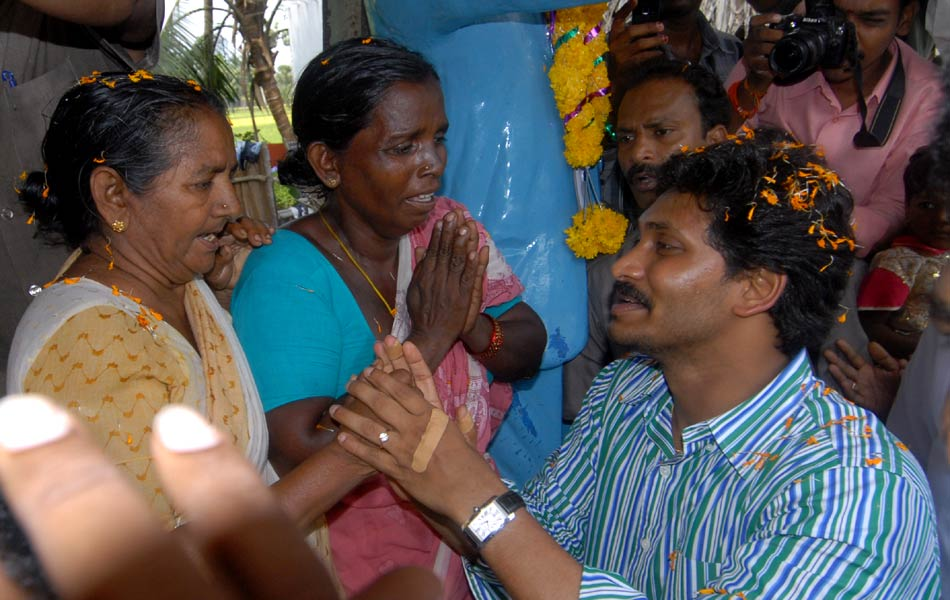

వై.ఎస్. జగన్
వై.ఎస్. జగన్ మోహన్ రెడ్డి చిన్నప్పటినుంచి రాజకీయాల్లో ఆసక్తి చూపించారు. ఆయన తండ్రి వై.ఎస్. రాజశేఖర్ రెడ్డి, ఆంధ్రప్రదేశ్ ముఖ్యమంత్రిగా ఉన్నప్పుడు ప్రజల సంక్షేమ కార్యక్రమాలు చేపట్టడం ద్వారా జగన్ రాజకీయాల్లో ఆసక్తి పెంచుకున్నాడు. 2009లో తండ్రి అకస్మాత్తుగా మరణించిన తర్వాత, జగన్ తన తండ్రి ఆశయాన్ని కొనసాగిస్తూ ప్రజల మధ్య చేరి, వారి సమస్యలను స్వయంగా గ్రహించారు. చిన్నపాటి ప్రాధాన్యతలు, వ్యక్తిగత కష్టాలు, రాజకీయ నిర్లక్ష్యాలను ఎదుర్కొని ఆయన రాజకీయంలో స్థిరమైన స్థానం సంపాదించారు.

ఒదర్పు యాత్ర
తండ్రి మరణం తర్వాత జగన్ కాంగ్రెస్ పార్టీ నుండి తప్పుకోవాలని నిర్ణయించుకొని, తన స్వంత పార్టీ - వై.ఎస్.ఆర్ కాంగ్రెస్ పార్టీని స్థాపించారు. కొత్త పార్టీని ప్రారంభించడం మరియు దాని కోసం ప్రజల మధ్య చేరడం ఆయనకు పెద్ద సవాలు.
రాజకీయ వ్యతిరేకులు ఎదుర్కొన్న సమస్యలు, ఎన్నికల్లో అనేక విఫలతలు, మరియు వ్యక్తిగత కష్టాలు ఆయనకు ఎదురయ్యాయి. ఈ సమయంలో, ఆయన కొన్ని నెలలు జైలులో కూడా ఉన్నారు.

జీవితయాత్ర & విజయాలు
జైలు నుండి వెలువడి, జగన్ మోహన్ రెడ్డి తన ప్రజలతో నేరుగా సంబంధం పెంచడానికి ‘పాదయాత్ర’ ప్రారంభించారు. ఈ పాదయాత్రలో గ్రామాలకు, పట్టణాలకు వెళ్ళి ప్రజల సమస్యలు తెలుసుకుని, సంక్షేమ కార్యక్రమాలను ప్రారంభించారు.
ప్రజల హృదయాల్లో స్థానం సంపాదించిన తర్వాత, ఆయన 2019లో అత్యధిక మెజారిటీతో ఆంధ్రప్రదేశ్ ముఖ్యమంత్రిగా ఎన్నికయ్యారు. ఈ విజయ యాత్ర, వ్యక్తిగత కష్టాలను అధిగమించి, ప్రజల కోసం చేసిన సంకల్పానికి నిదర్శనం.
గ్యాలరీ
Contact
Website by Ajay Prem Kumar